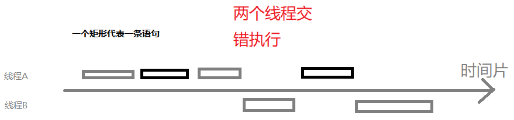

<!DOCTYPE HTML>
<html>
<head><meta name="generator" content="Hexo 3.8.0">
  <meta charset="utf-8">
  
  <title>线程的基础知识 [2] | 3 mol&#39; Notes</title>
  <meta name="author" content="3 mol">
  
  <meta name="description" content="本文章记录">
  
  
  <meta name="viewport" content="width=device-width, initial-scale=1, maximum-scale=1">

  <meta property="og:title" content="线程的基础知识 [2]">
  <meta property="og:site_name" content="3 mol&#39; Notes">

  
    <meta property="og:image" content>
  

  <link href="/favicon.png" rel="icon">
  <link rel="alternate" href="/atom.xml" title="3 mol&#39; Notes" type="application/atom+xml">
  <link rel="stylesheet" href="/css/style.css" media="screen" type="text/css">
  <!--[if lt IE 9]><script src="//html5shiv.googlecode.com/svn/trunk/html5.js"></script><![endif]-->
  

</head>
</html>

<body>
  <header id="header" class="inner"><div>
  <h1><a href="/">3 mol&#39; Notes</a></h1>
  <h2><a href="/"></a></h2>
</div>
<nav id="main-nav">
  <ul>
    
      <li><a href="/">Home</a></li>
    
      <li><a href="/archives">Archives</a></li>
    
  </ul>
  <div class="clearfix"></div>
</nav>
<div class="clearfix"></div>
</header>
  <div id="content" class="inner">
    <div id="main-col" class="alignleft"><div id="wrapper"><article class="post">
  
  <div class="post-content">
    <header>
      
        <div class="icon"></div>
        <time datetime="2019-03-26T07:24:58.000Z"><a href="/2019/03/26/线程基础知识 【2】/">2019-03-26</a></time>
      
      
  
    <h1 class="title">线程的基础知识 [2]</h1>
  

    </header>
    <div class="entry">
      
        <h1 id="一、-互斥同步"><a href="#一、-互斥同步" class="headerlink" title="一、 互斥同步"></a>一、 互斥同步</h1><p>Java 提供两种锁机制控制多线程对共享资源的互斥访问</p>
<ul>
<li>JVM 提供的 synchronized</li>
<li>JDK 提供的 ReentrantLock</li>
</ul>
<h2 id="synchronized"><a href="#synchronized" class="headerlink" title="synchronized"></a>synchronized</h2><ol>
<li><p>同步代码块</p>
<figure class="highlight java"><table><tr><td class="gutter"><pre><span class="line">1</span><br><span class="line">2</span><br><span class="line">3</span><br><span class="line">4</span><br><span class="line">5</span><br></pre></td><td class="code"><pre><span class="line"><span class="function"><span class="keyword">public</span> <span class="keyword">void</span> <span class="title">func</span><span class="params">()</span> </span>&#123;</span><br><span class="line">    <span class="keyword">synchronized</span> (<span class="keyword">this</span>) &#123;</span><br><span class="line">        <span class="comment">// ...</span></span><br><span class="line">    &#125;</span><br><span class="line">&#125;</span><br></pre></td></tr></table></figure>
<a id="more"></a>
<p>下面的代码作为例子</p>
<figure class="highlight java"><table><tr><td class="gutter"><pre><span class="line">1</span><br><span class="line">2</span><br><span class="line">3</span><br><span class="line">4</span><br><span class="line">5</span><br><span class="line">6</span><br><span class="line">7</span><br><span class="line">8</span><br><span class="line">9</span><br><span class="line">10</span><br><span class="line">11</span><br><span class="line">12</span><br><span class="line">13</span><br><span class="line">14</span><br><span class="line">15</span><br><span class="line">16</span><br><span class="line">17</span><br><span class="line">18</span><br><span class="line">19</span><br><span class="line">20</span><br><span class="line">21</span><br></pre></td><td class="code"><pre><span class="line"><span class="function"><span class="keyword">public</span> <span class="keyword">static</span> <span class="keyword">void</span> <span class="title">main</span><span class="params">(String[] args)</span> </span>&#123;</span><br><span class="line">       <span class="keyword">new</span> Thread(<span class="keyword">new</span> Runnable() &#123;</span><br><span class="line">           <span class="meta">@Override</span></span><br><span class="line">           <span class="function"><span class="keyword">public</span> <span class="keyword">void</span> <span class="title">run</span><span class="params">()</span> </span>&#123;</span><br><span class="line">               <span class="keyword">while</span> (<span class="keyword">true</span>)&#123;</span><br><span class="line">                   System.out.println(<span class="string">"线程A在执行代码"</span>);</span><br><span class="line">                   System.out.println(<span class="string">"线程A做了某些事情"</span>);</span><br><span class="line">               &#125;</span><br><span class="line">           &#125;</span><br><span class="line">       &#125;).start();</span><br><span class="line">   </span><br><span class="line">       <span class="keyword">new</span> Thread(<span class="keyword">new</span> Runnable() &#123;</span><br><span class="line">           <span class="meta">@Override</span></span><br><span class="line">           <span class="function"><span class="keyword">public</span> <span class="keyword">void</span> <span class="title">run</span><span class="params">()</span> </span>&#123;</span><br><span class="line">               <span class="keyword">while</span> (<span class="keyword">true</span>)&#123;</span><br><span class="line">                   System.out.println(<span class="string">"---线程B线程B在执行代码---"</span>);</span><br><span class="line">                   System.out.println(<span class="string">"---线程B线程B做了某些事情---"</span>);</span><br><span class="line">               &#125;</span><br><span class="line">           &#125;</span><br><span class="line">       &#125;).start();</span><br><span class="line">   &#125;</span><br></pre></td></tr></table></figure>
<p>执行结果</p>
<figure class="highlight html"><table><tr><td class="gutter"><pre><span class="line">1</span><br><span class="line">2</span><br><span class="line">3</span><br><span class="line">4</span><br><span class="line">5</span><br><span class="line">6</span><br><span class="line">7</span><br><span class="line">8</span><br><span class="line">9</span><br><span class="line">10</span><br><span class="line">11</span><br></pre></td><td class="code"><pre><span class="line">线程A在执行代码</span><br><span class="line">线程A做了某些事情</span><br><span class="line">线程A在执行代码</span><br><span class="line">线程A做了某些事情</span><br><span class="line">线程A在执行代码					【打印 A 线程的第一句】</span><br><span class="line">---线程B线程B在执行代码--		   【打印 B 线程的第一句】</span><br><span class="line">---线程B线程B做了某些事情---</span><br><span class="line">---线程B线程B在执行代码---</span><br><span class="line">---线程B线程B做了某些事情---</span><br><span class="line">---线程B线程B在执行代码---</span><br><span class="line">---线程B线程B做了某些事情---</span><br></pre></td></tr></table></figure>
<p>也就是 <code>在执行A线程的过程中，CPU让出了时间片去执行线程B</code> 这样会导致数据不一致（也就是数据库中不一致导致的三种情况：污读、不可重读、丢失更新）。</p>
<p></p>
<p>如何解决问题呢？采用 synchronized 关键字可以使得一个块中的代码必须执行完成，否则不能让出时间片执行其他线程。这两个线程会进行同步，当一个线程进入同步语句块时，另一个线程就必须等待。</p>
<figure class="highlight java"><table><tr><td class="gutter"><pre><span class="line">1</span><br><span class="line">2</span><br><span class="line">3</span><br><span class="line">4</span><br><span class="line">5</span><br></pre></td><td class="code"><pre><span class="line"><span class="comment">// 可以是 this， 也可以是某一个对象。</span></span><br><span class="line"><span class="keyword">synchronized</span> (<span class="keyword">this</span>) &#123;</span><br><span class="line">    System.out.println(<span class="string">"线程A在执行代码"</span>);</span><br><span class="line">    System.out.println(<span class="string">"线程A做了某些事情"</span>);</span><br><span class="line">&#125;</span><br></pre></td></tr></table></figure>
<p>执行结果</p>
<figure class="highlight java"><table><tr><td class="gutter"><pre><span class="line">1</span><br><span class="line">2</span><br><span class="line">3</span><br><span class="line">4</span><br><span class="line">5</span><br><span class="line">6</span><br><span class="line">7</span><br><span class="line">8</span><br><span class="line">9</span><br></pre></td><td class="code"><pre><span class="line">线程A做了某些事情</span><br><span class="line">线程A在执行代码</span><br><span class="line">线程A做了某些事情</span><br><span class="line">线程A在执行代码</span><br><span class="line">线程A做了某些事情</span><br><span class="line">---线程B线程B做了某些事情---</span><br><span class="line">---线程B线程B在执行代码---</span><br><span class="line">---线程B线程B做了某些事情---</span><br><span class="line">---线程B线程B在执行代码---</span><br></pre></td></tr></table></figure>
<p></p>
<p>不知道你是否注意到 <code>synchronized(this)</code>，它在这里的作用是什么？</p>
<p>它只作用于同一个对象，如果调用两个对象上的同步代码块，就不会进行同步。比如A线程是要同步String的实例，而B线程要同步的是Object的实例，这样两个线程之间<code>并不是同步同一个对象</code>，结果将会是异步执行。</p>
<p>最后用一个例子看加深对this的理解</p>
<figure class="highlight java"><table><tr><td class="gutter"><pre><span class="line">1</span><br><span class="line">2</span><br><span class="line">3</span><br><span class="line">4</span><br><span class="line">5</span><br><span class="line">6</span><br><span class="line">7</span><br><span class="line">8</span><br><span class="line">9</span><br><span class="line">10</span><br></pre></td><td class="code"><pre><span class="line"><span class="keyword">public</span> <span class="class"><span class="keyword">class</span> <span class="title">SynchronizedExample</span> </span>&#123;</span><br><span class="line"></span><br><span class="line">    <span class="function"><span class="keyword">public</span> <span class="keyword">void</span> <span class="title">func1</span><span class="params">()</span> </span>&#123;</span><br><span class="line">        <span class="keyword">synchronized</span> (<span class="keyword">this</span>) &#123;</span><br><span class="line">            <span class="keyword">for</span> (<span class="keyword">int</span> i = <span class="number">0</span>; i &lt; <span class="number">10</span>; i++) &#123;</span><br><span class="line">                System.out.print(i + <span class="string">" "</span>);</span><br><span class="line">            &#125;</span><br><span class="line">        &#125;</span><br><span class="line">    &#125;</span><br><span class="line">&#125;</span><br></pre></td></tr></table></figure>
<figure class="highlight java"><table><tr><td class="gutter"><pre><span class="line">1</span><br><span class="line">2</span><br><span class="line">3</span><br><span class="line">4</span><br><span class="line">5</span><br><span class="line">6</span><br></pre></td><td class="code"><pre><span class="line"><span class="function"><span class="keyword">public</span> <span class="keyword">static</span> <span class="keyword">void</span> <span class="title">main</span><span class="params">(String[] args)</span> </span>&#123;</span><br><span class="line">    SynchronizedExample e1 = <span class="keyword">new</span> SynchronizedExample();</span><br><span class="line">    ExecutorService executorService = Executors.newCachedThreadPool();</span><br><span class="line">    executorService.execute(() -&gt; e1.func1());</span><br><span class="line">    executorService.execute(() -&gt; e1.func1());</span><br><span class="line">&#125;</span><br></pre></td></tr></table></figure>
<figure class="highlight html"><table><tr><td class="gutter"><pre><span class="line">1</span><br></pre></td><td class="code"><pre><span class="line">0 1 2 3 4 5 6 7 8 9 0 1 2 3 4 5 6 7 8 9</span><br></pre></td></tr></table></figure>
<p>对于以下代码，两个线程调用了不同对象（内部是通过地址值是否加锁来判断的吗？疑惑）的同步代码块，因此这两个线程就不需要同步。从输出结果可以看出，两个线程交叉执行。</p>
<figure class="highlight java"><table><tr><td class="gutter"><pre><span class="line">1</span><br><span class="line">2</span><br><span class="line">3</span><br><span class="line">4</span><br><span class="line">5</span><br><span class="line">6</span><br><span class="line">7</span><br><span class="line">8</span><br><span class="line">9</span><br><span class="line">10</span><br></pre></td><td class="code"><pre><span class="line"><span class="function"><span class="keyword">public</span> <span class="keyword">static</span> <span class="keyword">void</span> <span class="title">main</span><span class="params">(String[] args)</span> </span>&#123;</span><br><span class="line">    SynchronizedExample e11 = <span class="keyword">new</span> SynchronizedExample();</span><br><span class="line">    SynchronizedExample e22 = <span class="keyword">new</span> SynchronizedExample();</span><br><span class="line">    ExecutorService executorService2 = Executors.newCachedThreadPool();</span><br><span class="line">    <span class="comment">// e11::func1  冒号表达式格式 对象名::方法名</span></span><br><span class="line">    <span class="comment">// 等价于 new Runnable()...run()&#123;e2.func1();&#125;</span></span><br><span class="line">    <span class="comment">// 等价于 executorService.execute(() -&gt; e2.func1())；</span></span><br><span class="line"> 	executorService2.execute(e11::func1);</span><br><span class="line">    executorService2.execute(e22::func1);</span><br><span class="line">&#125;</span><br></pre></td></tr></table></figure>
<figure class="highlight html"><table><tr><td class="gutter"><pre><span class="line">1</span><br><span class="line">2</span><br></pre></td><td class="code"><pre><span class="line">// 交错乱序</span><br><span class="line">0 1 0 2 3 4 5 6 7 1 8 9 2 3 4 5 6 7 8 9</span><br></pre></td></tr></table></figure>
</li>
<li><p>同步方法</p>
<figure class="highlight java"><table><tr><td class="gutter"><pre><span class="line">1</span><br><span class="line">2</span><br><span class="line">3</span><br></pre></td><td class="code"><pre><span class="line"><span class="function"><span class="keyword">public</span> <span class="keyword">synchronized</span> <span class="keyword">void</span> <span class="title">func</span> <span class="params">()</span> </span>&#123;</span><br><span class="line">    <span class="comment">// ...</span></span><br><span class="line">&#125;</span><br></pre></td></tr></table></figure>
<p>它和同步代码块一样，作用于同一个对象。</p>
</li>
<li><p>同步类</p>
<figure class="highlight java"><table><tr><td class="gutter"><pre><span class="line">1</span><br><span class="line">2</span><br><span class="line">3</span><br><span class="line">4</span><br><span class="line">5</span><br></pre></td><td class="code"><pre><span class="line"><span class="function"><span class="keyword">public</span> <span class="keyword">void</span> <span class="title">func</span><span class="params">()</span> </span>&#123;</span><br><span class="line">    <span class="keyword">synchronized</span> (SynchronizedExample.class) &#123;</span><br><span class="line">        <span class="comment">// ...</span></span><br><span class="line">    &#125;</span><br><span class="line">&#125;</span><br></pre></td></tr></table></figure>
<p>作用于整个类，也就是说两个线程调用 <code>同一个类的不同对象上</code> 的这种同步语句，也会进行同步。</p>
</li>
<li><p>同步静态方法</p>
<figure class="highlight java"><table><tr><td class="gutter"><pre><span class="line">1</span><br><span class="line">2</span><br><span class="line">3</span><br></pre></td><td class="code"><pre><span class="line"><span class="function"><span class="keyword">public</span> <span class="keyword">synchronized</span> <span class="keyword">static</span> <span class="keyword">void</span> <span class="title">func</span><span class="params">()</span> </span>&#123;</span><br><span class="line">    <span class="comment">// ...</span></span><br><span class="line">&#125;</span><br></pre></td></tr></table></figure>
<p>作用于整个类。</p>
</li>
</ol>
<h2 id="ReentrantLock"><a href="#ReentrantLock" class="headerlink" title="ReentrantLock"></a>ReentrantLock</h2><p>reentrantLock  是 JDK 的实现，不同的 JDK 版本内部实现可能不同，位于 J.U.C 中。</p>
<figure class="highlight java"><table><tr><td class="gutter"><pre><span class="line">1</span><br><span class="line">2</span><br><span class="line">3</span><br><span class="line">4</span><br><span class="line">5</span><br><span class="line">6</span><br><span class="line">7</span><br><span class="line">8</span><br><span class="line">9</span><br><span class="line">10</span><br><span class="line">11</span><br><span class="line">12</span><br><span class="line">13</span><br><span class="line">14</span><br><span class="line">15</span><br><span class="line">16</span><br><span class="line">17</span><br></pre></td><td class="code"><pre><span class="line"><span class="keyword">public</span> <span class="class"><span class="keyword">class</span> <span class="title">LockExample</span> </span>&#123;</span><br><span class="line"></span><br><span class="line">    <span class="keyword">private</span> Lock lock = <span class="keyword">new</span> ReentrantLock();</span><br><span class="line"></span><br><span class="line">    <span class="function"><span class="keyword">public</span> <span class="keyword">void</span> <span class="title">func</span><span class="params">()</span> </span>&#123;</span><br><span class="line">        <span class="comment">// 上锁</span></span><br><span class="line">        lock.lock();</span><br><span class="line">        <span class="keyword">try</span> &#123;</span><br><span class="line">            <span class="keyword">for</span> (<span class="keyword">int</span> i = <span class="number">0</span>; i &lt; <span class="number">10</span>; i++) &#123;</span><br><span class="line">                System.out.print(i + <span class="string">" "</span>);</span><br><span class="line">            &#125;</span><br><span class="line">        &#125; <span class="keyword">finally</span> &#123;</span><br><span class="line">            <span class="comment">// 解锁</span></span><br><span class="line">            lock.unlock(); <span class="comment">// 确保释放锁，从而避免发生死锁。</span></span><br><span class="line">        &#125;</span><br><span class="line">    &#125;</span><br><span class="line">&#125;</span><br></pre></td></tr></table></figure>
<figure class="highlight java"><table><tr><td class="gutter"><pre><span class="line">1</span><br><span class="line">2</span><br><span class="line">3</span><br><span class="line">4</span><br><span class="line">5</span><br><span class="line">6</span><br></pre></td><td class="code"><pre><span class="line"><span class="function"><span class="keyword">public</span> <span class="keyword">static</span> <span class="keyword">void</span> <span class="title">main</span><span class="params">(String[] args)</span> </span>&#123;</span><br><span class="line">    LockExample lockExample = <span class="keyword">new</span> LockExample();</span><br><span class="line">    ExecutorService executorService = Executors.newCachedThreadPool();</span><br><span class="line">    executorService.execute(() -&gt; lockExample.func());</span><br><span class="line">    executorService.execute(() -&gt; lockExample.func());</span><br><span class="line">&#125;</span><br></pre></td></tr></table></figure>
<h2 id="他们的区别"><a href="#他们的区别" class="headerlink" title="他们的区别"></a>他们的区别</h2><p><strong>1. 锁的实现</strong></p>
<p>synchronized 是 JVM 实现的，而 ReentrantLock 是 JDK 实现的。</p>
<p><strong>2. 性能</strong></p>
<p>新版本 Java 对 synchronized 进行了很多优化，例如自旋锁等，synchronized 与 ReentrantLock 大致相同。</p>
<p><strong>3. 等待可中断</strong></p>
<p>当持有锁的线程长期不释放锁的时候，正在等待的线程可以选择放弃等待，改为处理其他事情。</p>
<p>ReentrantLock 可中断，而 synchronized 不行。</p>
<p><strong>4. 公平锁</strong></p>
<p>公平锁是指多个线程在等待同一个锁时，必须按照申请锁的时间顺序来依次获得锁。</p>
<p>synchronized 中的锁是非公平的，ReentrantLock 默认情况下也是非公平的，但是也可以是公平的。</p>
<p><strong>5. 锁绑定多个条件</strong></p>
<p>一个 ReentrantLock 可以同时绑定多个 Condition 对象。</p>
<h2 id="如何选择"><a href="#如何选择" class="headerlink" title="如何选择"></a>如何选择</h2><p>如何需要使用到 ReentrantLock 中的高级功能（长时间等待可放弃、公平锁、可绑定多个 Condition ），否则优先使用 synchronized。因为 synchronized 是 JVM 的实现，JVM 原生支持，而ReentrantLock 就不是所有 JDK 都支持的。而且不用担心锁没有释放而导致的死锁的问题，因为 JVM 会确保锁的释放。【如何实现？怎么释放锁的？】</p>
<h1 id="多个线程协作"><a href="#多个线程协作" class="headerlink" title="多个线程协作"></a>多个线程协作</h1><p>如何确保做完一个线程后执行另一个线程？如何通知线程挂起和恢复？</p>
<h2 id="join"><a href="#join" class="headerlink" title="join()"></a>join()</h2><blockquote>
<p>在线程中调用另一个线程的 join() 方法，会将当前线程挂起，而不是忙等待，直到目标线程结束。(也就是当你不想干活的时候叫个小弟来帮忙，小弟做完之后你就重新恢复到之前的工作)</p>
</blockquote>
<p>特点是一个线程要传入另一个线程的实例，要挂起的时候就调用另一个线程的实例的 join() 方法。可以实现线程的中途挂起调度另一个线程。</p>
<h2 id="wait-notify-notifyAll"><a href="#wait-notify-notifyAll" class="headerlink" title="wait() notify() notifyAll()"></a>wait() notify() notifyAll()</h2><blockquote>
<p>调用 wait() 使得线程等待某个条件满足，线程在等待时会被挂起，当其他线程的运行使得这个条件满足时，其它线程会调用 notify() 或者 notifyAll() 来唤醒挂起的线程。(老师傅进入休息状态，然后他的徒弟可以通知他起床)</p>
</blockquote>
<p><strong>wait() 和 sleep() 的区别</strong></p>
<ul>
<li>wait() 是 Object 的方法，而 sleep() 是 Thread 的静态方法；</li>
<li>wait() 会释放锁，sleep() 不会。</li>
</ul>
<h2 id="await-signal-signalAll"><a href="#await-signal-signalAll" class="headerlink" title="await() signal() signalAll()"></a>await() signal() signalAll()</h2><p>java.util.concurrent 类库中提供了 Condition 类来实现线程之间的协调，可以在 Condition 上调用 await() 方法使线程等待，其它线程调用 signal() 或 signalAll() 方法唤醒等待的线程。</p>
<p>相比于 wait() 这种等待方式，await() 可以指定等待的条件，因此更加灵活。</p>
<p>使用 Lock 来获取一个 Condition 对象。</p>

      
    </div>
    <footer>
      
        
  
  <div class="categories">
    <a href="/categories/Java/">Java</a>
  </div>

        
  
  <div class="tags">
    <a href="/tags/多线程/">多线程</a>, <a href="/tags/Java/">Java</a>
  </div>

        
  <div class="addthis addthis_toolbox addthis_default_style">
    
      <a class="addthis_button_facebook_like" fb:like:layout="button_count"></a>
    
    
      <a class="addthis_button_tweet"></a>
    
    
      <a class="addthis_button_google_plusone" g:plusone:size="medium"></a>
    
    
      <a class="addthis_button_pinterest_pinit" pi:pinit:layout="horizontal"></a>
    
    <a class="addthis_counter addthis_pill_style"></a>
  </div>
  <script type="text/javascript" src="//s7.addthis.com/js/300/addthis_widget.js"></script>

      
      <div class="clearfix"></div>
    </footer>
  </div>
</article>


<section id="comment">
  <h1 class="title">Comments</h1>

  
      <div id="fb-root"></div>
<script>
  (function(d, s, id) {
    var js, fjs = d.getElementsByTagName(s)[0];
    if (d.getElementById(id)) return;
    js = d.createElement(s); js.id = id;
    js.src = "//connect.facebook.net/en_US/all.js#xfbml=1&appId=123456789012345";
    fjs.parentNode.insertBefore(js, fjs);
  }(document, 'script', 'facebook-jssdk'));
</script>

<div class="fb-comments" data-href="http://yoursite.com/2019/03/26/线程基础知识 【2】/index.html" data-num-posts="5" data-width="840" data-colorscheme="light"></div>
      
  
</section>

</div></div>
    <aside id="sidebar" class="alignright">
  <div class="search">
  <form action="//google.com/search" method="get" accept-charset="utf-8">
    <input type="search" name="q" results="0" placeholder="Search">
    <input type="hidden" name="q" value="site:yoursite.com">
  </form>
</div>

  
<div class="widget tag">
  <h3 class="title">Categories</h3>
  <ul class="entry">
  
    <li><a href="/categories/Java/">Java</a><small>2</small></li>
  
    <li><a href="/categories/默认/">默认</a><small>1</small></li>
  
  </ul>
</div>


  
<div class="widget tag">
  <h3 class="title">Tags</h3>
  <ul class="entry">
  
    <li><a href="/tags/Java/">Java</a><small>2</small></li>
  
    <li><a href="/tags/hexo/">hexo</a><small>1</small></li>
  
    <li><a href="/tags/多线程/">多线程</a><small>2</small></li>
  
  </ul>
</div>

</aside>
    <div class="clearfix"></div>
  </div>
  <footer id="footer" class="inner"><div class="alignleft">
  
  &copy; 2019 3 mol
  
</div>
<div class="clearfix"></div></footer>
  <script src="//ajax.googleapis.com/ajax/libs/jquery/2.0.3/jquery.min.js"></script>
<script src="/js/jquery.imagesloaded.min.js"></script>
<script src="/js/gallery.js"></script>


<link rel="stylesheet" href="/fancybox/jquery.fancybox.css" media="screen" type="text/css">
<script src="/fancybox/jquery.fancybox.pack.js"></script>
<script type="text/javascript">
(function($){
  $('.fancybox').fancybox();
})(jQuery);
</script>

</body>
</html>
